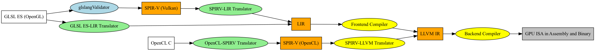
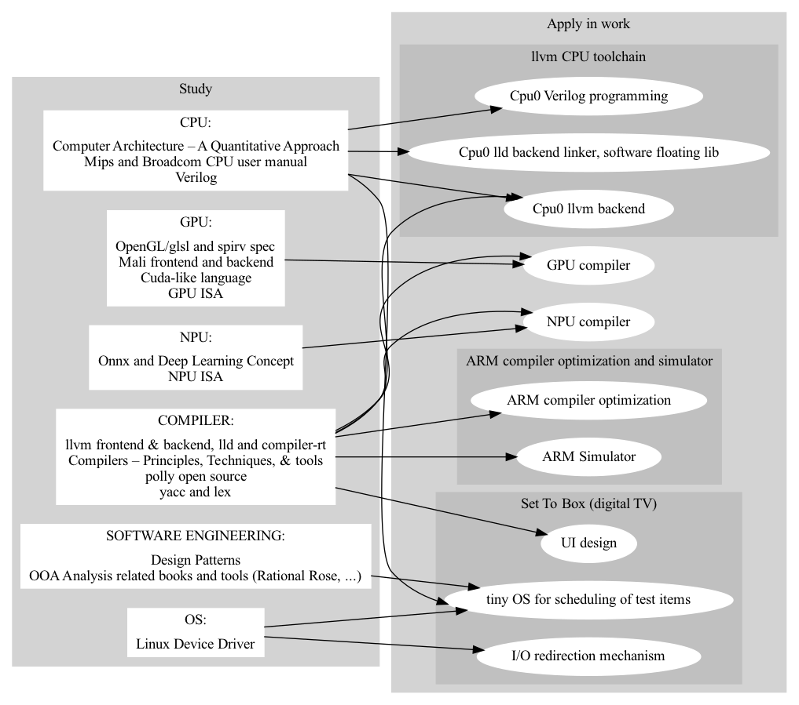

QUALIFICATION
Over 20 years experience in c/c++ programming, 7 years compiler toolchain related experience and research in parallel processing for master degree.

Chung-Shu Chen 陳鍾樞
I am a compiler developer with good experience in llvm cpu and gpu backend, lld linker, npu/onnx, c++, OpenGl/glsl and simulator, ..., and enjoy with compiler.
Over 20 years experience in c/c++ programming, 7 years compiler toolchain related experience and research in parallel processing for master degree.
I am proud of my work is accepted by LLVM documentation, appears at http://llvm.org/docs/tutorial/#external-tutorials
Tutorial: Create an LLVM Backend compiler  http://jonathan2251.github.io/lbd/index.html
http://jonathan2251.github.io/lbd/index.html
Tutorial: Create an LLVM Backend Toolchain  http://jonathan2251.github.io/lbt/index.html
http://jonathan2251.github.io/lbt/index.html
The concept of GPU compiler  http://jonathan2251.github.io/lbd/gpu.html
http://jonathan2251.github.io/lbd/gpu.html
1997-1999 Master, June 1999, National Taiwan Normal University (國立台灣師範大學), Taipei, Major: Information Science.
1991-1994 B.S., June 1994, National Taiwan Technology University of Science and Technology (國立台灣科技大學), Taipei, Major: Industry Engineer.
Taiwan National Computer Engineer license, 1995 高考資訊技師及格.
September 2004 - June 1999:
Proton 2004/3 – 2004/9 Manager Digital TV programming, Abocom 2003/6 – 2004/3, Senior Engineer 802.11b programming,
DBTEL 2001/11 – 2003/6 Engineer DECT wireless phone programming, Symmetry 2001/2 – 2001/11 Engineer, SGSN and GGSN for GPRS&3G programming,
Cando 2000/7 – 2001/2 Engineer CAM programming, Spirox 1999/12 – 2000/7, Engineer CAM programming, Intech 1999/6 – 1999/12 Engineer CAM programming
Take course "Image processing" and program: Jpeg decoder
Web and javascript: As my resume and my personal web site
Graphivz: as some graph diagrams used in this CV. Source code: mywork_1.gv and study_and_apply.gv
GPU compiler scope:

To support an our new designed GPU for cell phone, ported from ARM. 20% of frontend is changed, 50% of backend is changed in aspect of number of code lines.
My work:
Implement compiler (fontend + llvm backend) for 80% of texture related API and optimization by myself alone and document writing.
Instruct and help other engineers for the other 20% of texture related API, review their implementation and co-work with the leader of texture part of architect.
Implement compiler supporting our GPU's load/store for RGBA fixed floating point format of vulkan (32, 16, 11, 10 and 2 bits; NaN Infinity) alone and document writing.
Implement semi-auto software system of running benchmark and generating report for gcc toolchain.
Purpose is to make sure the code change of gcc has no side effect in optimization (expain in flow chart)
Implemented bash script which can compare any two version of gcc toolchain and generate report. Similar as above.
Demonstrate polly and the concept of polyhedral optimization model for Marvell llvm and gcc toolchain optimization. Polly is a software for loop optimization.
The advantage is that it might be 500% speed up in some numerical application program, such as matrix multiplication, or other kind of matrix operation. Sadly, Marvell's CPUs are not used in numerical applications. But maybe it will have for 64 bits ARM in future.

Implement co-simulator for a few Marvell's ARM based 64-bit cpu.
Propose and implement DSL on simulator to save tens of system verification in c++ coding.
ARM spec
→
script
→
generate c++
.h
.cpp
Mouse hover the above (in html) for explanation, obviously the script is simple, match ARM spec and easy to read more then the c++ program.
Complete cmake to replace make for Csim.
The version of cmake in Csim server is 2.6.x, however, the cmake 2.8.8 provides shared object to save the unnecessary compilation.
Report performance comparing between cmake and ninja for other manager's concern. The result is "no difference"
The upper half of the following figure is the work flow that software package of a computer program be generated and executed. IR stands for Intermediate Representation. The lower half is the my llvm backend's work flow. Yellow and green parts are my implementation in my books.

Design QIP7kP1 and P2 board level production line testing code. Over 5 millions units of QIP7k model of Set Top Box are tested with this code on production line and shipping to market. Other major products DCX33, DCX34 and DCX35 (over 10 millions of box) are ported from QIP7kP1 & QIP7kP2.
Combine mips cpu and software engineer knowledge, lead and cowork with other four members to create a frame work for board level testing code as manager request.

" Tiny OS": implement test items scheduling mechanism through timer interrupt routing with c++ "observe pattern" and mips assembly language to solve the halting problem in some testing program.
After this implementation, the code has run more stable and fast, and the testing driver code never hang on set top box.
Implement the I/O redirection mechanism to make the new version of code porting task easier in Motorola.